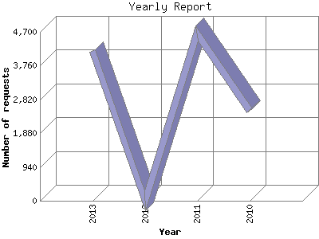

The Yearly Report shows total activity on your site for each calendar year.
Remember that each page hit can result in several server requests as the images
for each page are loaded.
Note: Most likely, the first and last years
will not represent a complete year's worth of data, resulting in lower hits.

| Year | Number of requests | Number of page requests | |
|---|---|---|---|
| 1. | 2010 | 2,501 | 1,714 |
| 2. | 2011 | 4,645 | 2,986 |
| 3. | 2012 | 0 | 0 |
| 4. | 2013 | 4,168 | 3,346 |
Most active year 2013 : 3,346 pages sent. 4,645 requests handled.
Yearly average: 2,682 pages sent. 3,771 requests handled.
This report was generated on December 12, 2013 06:01.
Report time frame July 20, 2010 15:14 to December 10, 2013 23:07.
| Web statistics report produced by: analog 6.0 / Report Magic 2.21 |